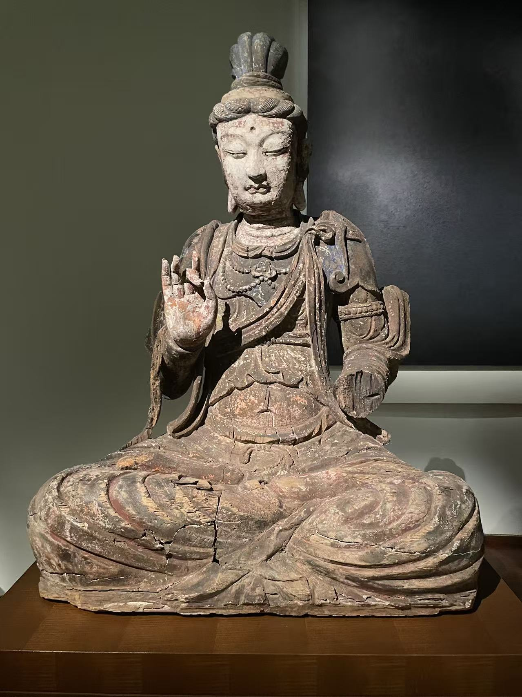

巴黎 · 吉美亚洲艺术博物馆01
作说法手势的菩萨坐像
Bodhisattva assis, esquissant le geste d’argumentation
- 年代
- 10世纪初，五代或辽；中国北方
- 材质
- 木，残存彩绘
- 编号
- MA 6995
双腿盘坐，双手在胸前作手势；大片脱落的表层与深色木胎并存。
作品札记与资料
展签记录其于2002年入藏，得到Crédit Agricole Indosuez支持。馆方题名为“菩萨”，具体尊格未定。
基本信息据现场展签整理；照片 © Merton。